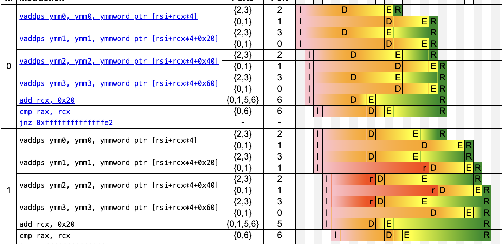

holozoo
Calculating array sum with speed of L1 cache
Problem statement
Calculate sum of array of numbers. Datatype can be either of int32_t, int64_t, float, double.
Do this on x86-64. Do it as fast as possible.
Array size can be arbitrary, but in range 1024-16384.
TLDR
- Use AVX-512
- Use as much accumulator variables as possible
In search of fastest code
Naive solution
float sum(size_t count, const float *data) {
float accum = 0;
for (size_t i = 0; i < count; ++i)
accum += data[i];
return accum;
}
GCC
If we compile with gcc -O2, we got the following code in main loop.
It has two additions to the xmm0 register, which serves as sum accumulator.
Notice that there are two additions: GCC decided to unroll the loop to process 2 elements per iteration.
.L3:
vaddss xmm0, xmm0, DWORD PTR [rsi]
add rsi, 8
vaddss xmm0, xmm0, DWORD PTR [rsi-4]
cmp rsi, rax
jne .L3
Clang
However, if we compile with clang -O2, we get the following loop:
.LBB0_9:
vaddss xmm0, xmm0, dword ptr [rsi + 4*rcx]
vaddss xmm0, xmm0, dword ptr [rsi + 4*rcx + 4]
vaddss xmm0, xmm0, dword ptr [rsi + 4*rcx + 8]
vaddss xmm0, xmm0, dword ptr [rsi + 4*rcx + 12]
vaddss xmm0, xmm0, dword ptr [rsi + 4*rcx + 16]
vaddss xmm0, xmm0, dword ptr [rsi + 4*rcx + 20]
vaddss xmm0, xmm0, dword ptr [rsi + 4*rcx + 24]
vaddss xmm0, xmm0, dword ptr [rsi + 4*rcx + 28]
add rcx, 8
cmp rdi, rcx
jne .LBB0_9
Clang unrolls loop to process 8 items per iteration.
Comparison
Let's plug this code into uiCA to calculate loop throughput.
uiCA is throughput prediction tool described in uiCA: Accurate Throughput Prediction of Basic Blocks on Recent Intel Microarchitectures
GCC:
Throughput (in cycles per iteration): 8.00
Bottleneck: Dependencies
The following throughputs could be achieved if the given property were the only bottleneck:
- DSB: 1.00
- Issue: 1.00
- Ports: 1.00
- Dependencies: 8.00
Clang:
Throughput (in cycles per iteration): 32.00
Bottleneck: Dependencies
The following throughputs could be achieved if the given property were the only bottleneck:
- DSB: 1.67
- Issue: 4.50
- Ports: 4.00
- Dependencies: 32.00
GCC has predicted throughput of 8 cycles/iteration. It processes 2 * 4 = 8 bytes/iteration. So, it processes 1 byte/cycle.
Clang has predicated throughput of 32 cycles/iteration. It processes 8 * 4 = 32 bytes/iteration. So, it processes 1 byte/cycle.
The throughput is the same.
We can plug the code that does not unroll the loop, and see that we would get the same 1 byte/cycle.
What's the deal here? uiCA tells us in the second line:
Bottleneck: Dependencies
Modern CPUs are pipelined, and multiple iterations of loop can be running simultaneously. That works if they do not have data dependencies (also called data hazards).
uiCA provides us with pipeline view. We can see that each next addition cannot execute E until previous finished running (this is indicated by D - dependency).
So, loop unrolling does not matter because all the additions are waiting on the same register to be updated.

Improving compiler result
We see that both GCC and Clang generate code that adds all array elements to a single accumulator sequentially.
This happens because compilers assume that floating-point addition is not commutative (a + b != b + a for any a, b) under the IEEE standard.
Compilers have option -ffast-math to relax this a bit.
Programs compiled with
-ffast-mathcan produce results different from naive solution, and often much less precise. This is not our concern, since we try to do summation as fast as possible. But to do correct summation there are techniques like Pairwise summation used, for example, in Apache Arrow.
GCC
Compiling the code using GCC with -ffast-math we get the same result.
We could get GCC to generate better code with
-funroll-loopsand-fvariable-expansion-in-unrollerflags (But if compilers were any good at their job we would have no need in these flags).
Clang
Compiling the code using Clang with -ffast-math we get the following code:
.LBB0_5:
vaddps ymm0, ymm0, ymmword ptr [rsi + 4*rcx]
vaddps ymm1, ymm1, ymmword ptr [rsi + 4*rcx + 32]
vaddps ymm2, ymm2, ymmword ptr [rsi + 4*rcx + 64]
vaddps ymm3, ymm3, ymmword ptr [rsi + 4*rcx + 96]
add rcx, 32
cmp rax, rcx
jne .LBB0_5
First thing to notice is that Clang generates code using ymm registers coming from AVX instruction set.
Secondly, it uses ps versions of addition - adding together packed scalars. Each vaddps instruction adds together 8 float values in parallel.
We can see that clang reduced the unroll count to 4 (previously being 8), and uses 4 distinct accumulators.
In the function epilogue these accumulators are added together to produce the final result.
What uiCA tells us about this code?
Throughput (in cycles per iteration): 4.02
Bottleneck: Dependencies
The following throughputs could be achieved if the given property were the only bottleneck:
- LSD: 1.33
- Issue: 2.00
- Ports: 2.00
- Dependencies: 4.00

Notice that uiCA still tells us that this code is dependency-bound
Code has predicated throughput of 4 cycles/iteration. It processes 8 * 4 * 4 = 128 bytes/iteration. So, it processes 32 bytes/cycle. This is 32 times more than previous version!
Manual vectorization
What we got as result from investigating compiler output is actually obvious (or becomes obvious, if you spend too much free time on problems like this):
- If you want to compute faster, use SIMD instructions.
- Use more accumulators to remove data dependencies.
This is manually vectorized addition loop, using SIMD instructions from AVX instruction set:
double hsum_double_avx(__m256d v)
{
__m128d vlow = _mm256_castpd256_pd128(v);
__m128d vhigh = _mm256_extractf128_pd(v, 1); // high 128
vlow = _mm_add_pd(vlow, vhigh); // reduce down to 128
__m128d high64 = _mm_unpackhi_pd(vlow, vlow);
return _mm_cvtsd_f64(_mm_add_sd(vlow, high64)); // reduce to scalar
}
double f64_arr_sum_w4(const double *arr, int count)
{
double sum = 0.0;
__m256d accum0 = _mm256_setzero_pd();
for (int i = 0; i < count - 3; i += 4) {
__m256d v0 = _mm256_load_pd(&arr[i]);
accum0 = _mm256_add_pd(accum0, v0);
}
sum = hsum_double_avx(accum0);
return sum;
}
What happens in
hsum_double_avxis not very important. You can read more about the function used in this StackOverflow answer.
If we use 4 accumulators here, and add them up in the end, we would get pretty much the same code as clang generates.
The question becomes, how many accumulators should we use?
I wrote the this function for all datatypes of interest (int32_t, int64_t, float, double), with accumulator count varying from 1 to 16 (as there are 16 ymm registers, and 32 zmm registers with AVX-512).
I did this using AVX and AVX-512 instructions.
Benchmarks
These are results of benchmarks done using google benchmark. I used a machine with Cascade Lake CPU. Cascade Lake has good support of AVX-512 and does not suffer from underclocking as much as Skylake-based CPUs did. I used array size of 1024.
double:
| 1 acc | 2 acc | 4 acc | 8 acc | 16 acc | |
|---|---|---|---|---|---|
| AVX2 | 259ns | 160ns | 87ns | 56ns | 56ns |
| AVX512 | 131ns | 88ns | 60ns | 57ns |
float:
| 1 acc | 2 acc | 4 acc | 8 acc | 16 acc | |
|---|---|---|---|---|---|
| AVX2 | 103ns | 69ns | 39ns | 31ns | 31ns |
| AVX512 | 64ns | 44ns | 34ns | 31ns |
int64_t:
| 1 acc | 2 acc | 4 acc | 8 acc | |
|---|---|---|---|---|
| AVX2 | 80ns | 74ns | 74ns | |
| AVX512 | 51ns | 50ns | 47ns | 47ns |
int32_t:
| 1 acc | 2 acc | 4 acc | 8 acc | |
|---|---|---|---|---|
| AVX2 | 131ns | 81ns | 81ns | |
| AVX512 | 36ns | 21ns | 22ns | 23ns |
Conclusion
AVX-512 is superior in speed. Always. AVX-512 instructions take the same time to decode and execute, but are able to process more elements, as well as remove pressure from memory subsystem, issuing less requests.
We can see that all datatypes converge to the same time as number of accumulators increases. We can say that speed does not degrades with greater accumulator count, but it stops improving from certain point either.
We can also see that using 8 accumulators for doing sum of float array using AVX (what we did in first part of post) is faster with 8 accumulators, than with 4 (as clang generated). But this difference is unimportant.
uiCA would say that using 8 accumulators instead of 4 would provide twice the throughput, but it is clearly not the case.
One of the things I noted for myself - is that throughput predictors are unable to handle memory-bound problems like this well. They usually provide approximate results, and sometimes outright incorrect.
The most important question here - what is the limit? Why code stops getting faster?
We can try to guess. Let's calculate the time throughput for double and float sums using AVX-512.
They take 56 and 31 ns respectively. They process 8 * 1024 = 8192 and 4 * 1024 = 4096 bytes respectively.
This is 146 bytes/ns and 132 bytes/ns throughput. This is about 140 GB/s.
This sounds like a lot. We can checks Performance speed limits, or just google - what is the speed of memory for fastest access. Array data is accessed through L1 cache. L1 on Cascade Lake works 64 bytes/per cycle. Knowing that our CPU operates at about 3GHz, we get 182 GB/s of maximum possible throughput.
Our code hit the L1 cache speed limit - it can't get any faster. This means that we process data faster than we read it, so, as I see it, this is satisfactory result.
Unpacking 8 bits to 8 bools
Problem statement
8 bits stored in uint8_t variable. Unpack each bit into distinct bool values, stored continuously in array (first bit goes into first bool and so on).
Do it as fast as possible.
TLDR
- Use
PDEPinstruction fromBMI2if available - You can use bithack described here to do the same thing
- Ask yourself if you really need to do this because there is probably a better solution
In search of fastest code
Naive solution
void unpack(uint8_t bits, bool bools[8]) {
for (int i = 0; i < 8; ++i)
bools[i] = !!(bits & (1 << i));
}
This is clearly very inefficient. I wouldn't go into much detail to explain why it is so, so let's just go to better versions.
Using BMI2
X86-64 has a number of ISA extensions. One of them is BMI2 instruction set.
One of the instructions provided is PDEP: parallel bits deposit.
It takes two 32-bit (or two 64-bit) operands and stores first n bits from first operand into destination using n positions selected with second operand, indicated with set bits. This means that we can select first n bits and store in arbitrary n places in destination, provided that order stays the same.
You can find code for software implementation here.
We can use it to do what we want with the following code:
void unpack(uint8_t bits, bool bools[8]) {
uint64_t bools64 = _pdep_u64(bmask, 0x0101010101010101ul);
memcpy(bools, &bools64, sizeof(bools64));
}
We use PDEP here to select first 8 bits from bits and put then in places given with 0x0101010101010101ul. These are first bits in each 8-bit part of 64-register, which equates to how bools are stored in memory.
Because bits are stored in byte in little-endian format, the resulting bools64 is also little-endian. First bit goes to first byte, and order is not reversed.
What's the catch? BMI2 is not available on all machines, and it is infamously slow on AMD.
We can check uops.info:
| Skylake | Ice Lake | Zen2 | Zen3 | |
|---|---|---|---|---|
| Latency | 3 | 3 | 18 | 3 |
| TP | 1 | 1 | 19 | 1 |
Zen2 is 2019 architecture (same as Ice Lake), and it is quite possible to find machines that have this horrendously implemented PDEP.
Bithack
Bithacks come to the rescue. As it turns out, it is possible to do required operation using nothing but arithmetic and bit operations without any array accesses.
Bithack is based on idea that we can use multiplication to place required bits into required positions. This is most obvious if we write multiplication the long way - as we all did in school. Let's say, for simplicity, that we deal with 4 bits, and want to extract them to 4 bytes. Practically it means extracting each bit and placing it into first position of each of the 4 bytes.
Let's write 4 bit value as dcba (in little-endian bit order). Each letter represents bit value (either 1, or 0).
Right now I will write a series of operations that correspond to this code ((bits * magic) & mask) >> shift.
After that I will explain what happened.
dcba *
1000 100 10 1 = <- magic
dcba000 dcba00 dcba0 dcba &
1000 1000 1000 1000 = <- mask
a b c d >>
3 = <- shift
a b c d
Result of described operations in what we want - but with reversed order. We'll deal with order later, right now we want to understand what happened.
Each octet in magic has only 1 bit set. When we multiply octet, containing input bits by this magic number we effectively copy the input bits into each octet, shifted left.
Thus, when we mask the result of previous operation with correct mask, we are able to select different bits in each octet.
After that we only have to put these bits into correct positions.
The code for 8 bits is the following:
void unpack(uint8_t bits, bool bools[8]) {
uint64_t magic = 0x8040201008040201ul;
uint64_t mask = 0x8080808080808080ul;
uint64_t t = ((magic * bits) & mask) >> 7;
memcpy(bools, &t, sizeof(t)); // NOT CORRECT!!!!!!
}
There is only one problem - the order of bytes is reversed. We can mitigate that using BSWAP instruction, but it is quite slow (2 latency, 1 throughput).
void unpack(uint8_t bits, bool bools[8]) {
uint64_t magic = 0x8040201008040201ul;
uint64_t mask = 0x8080808080808080ul;
uint64_t t = ((magic * bits) & mask) >> 7;
t = _bswap64(t);
memcpy(bools, &t, sizeof(t));
}
So let's just reverse the bytes in magic! Unfortunately, that does not work as expected (I won't write whole expression):
efghdcba *
00010000 00100000 01000000 10000000 = <- magic
efghdcb a
efghdc ba
efghd cba
We can see that during computation of multiplication certain bits overlap and thus get added up and carried - we do not get the 'parallel' multiplication as we did previously, when there was no overlap.
However, we can see that overlap always occurs with two bits: bit a and bit e. We know for a fact in which location bit a should go - in the first byte. We can mask this bit out and perform multiplication with efghdcb0. This way
no carry will occur, but bit a should be set in correct position by hand.
void unpack(uint8_t bits, bool bytes[8]) {
uint64_t magic = 0x0102040810204080ul >> 7;
uint64_t mask = 0x0101010101010101ul;
uint64_t lo = ((magic * (uint64_t)(bits & 0xfe))) | bits;
uint64_t result = lo & mask;
memcpy(bytes, &result, sizeof(result));
}
Here shift is done right in
magic. Because lower octet is empty (as first bit would go there, but masked it out), it is valid.
Benchmarks
I originally stumbled upon this task when vectorizing loops that do comparison:
void compare32(const int32_t *a, const int32_t *b, bool *result, int nvalues) {
for (int i = 0; i < nvalues; ++i)
result[i] = a[i] > b[i];
}
Their AVX vector versions using bithack and PDEP:
void avx_compare32_w8_bithack(const int32_t *a, const int32_t *b, bool *result, int nvalues) {
#pragma GCC unroll 4
for (int i = 0; i < nvalues - 7; i += 8) {
__m256i cmp1 = _mm256_cmpgt_epi32(_mm256_loadu_si256((__m256i *)(a + i)),
_mm256_loadu_si256((__m256i *)(b + i)));
unsigned mask = (unsigned)_mm256_movemask_ps(_mm256_castsi256_ps(cmp1));
unpack8bools(mask, result + i);
}
}
void avx_compare32_w8_bmi(const int32_t *a, const int32_t *b, bool *result, int nvalues) {
#pragma GCC unroll 4
for (int i = 0; i < nvalues - 7; i += 8) {
__m256i cmp1 = _mm256_cmpgt_epi32(_mm256_loadu_si256((__m256i *)(a + i)),
_mm256_loadu_si256((__m256i *)(b + i)));
unsigned mask = (unsigned)_mm256_movemask_ps(_mm256_castsi256_ps(cmp1));
uint64_t combined = _pdep_u64(mask, 0x0101010101010101);
memcpy(result + i, &combined, sizeof(combined));
}
}
I did benchmarks, and also benchmarked versions of these loops that use more vector registers per iteration: 2 and 4. These use have tasks of unpacking 16 bit to 16 bytes and 32 bits to 32 bytes respectively. These tasks can be solved using other techniques.
I won't provide complete code here for other versions, but you can look here for ideas
These are the results:
| w32 | w16 | w8 bithack | w8 pdep |
|---|---|---|---|
| 78ns | 99ns | 158ns | 105 ns |
We see that PDEP version performs better than bithack.
But bithack performs pretty well for such simple solution.
But the main point here is that using other number of vector registers allows us to avoid this task altogether, producing faster code on the way.
Anyway, I think this was an interesting problem to investigate, despite being useless on practice, as there are easy ways to avoid this problem. Extracting 16, 32, or 64 bits to bytes is much less problematic. And this problem is completely absent when using AVX-512 as there is VMOVDQU8 instruction, which allows zero-masking, producing the same result.
References
The idea is described here. Basic version of code is here, but it does not work for the little-endian as expected (meaning we can't recast result value correctly to bool).